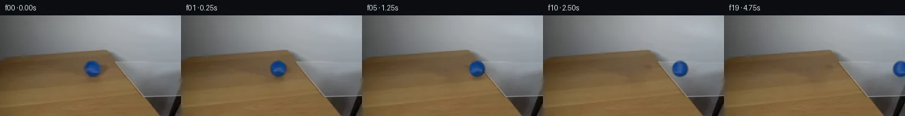
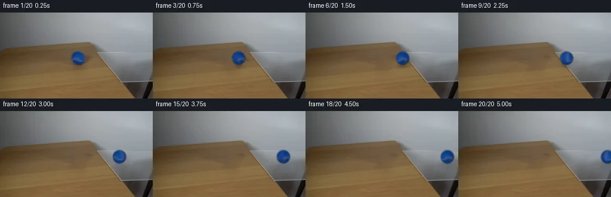
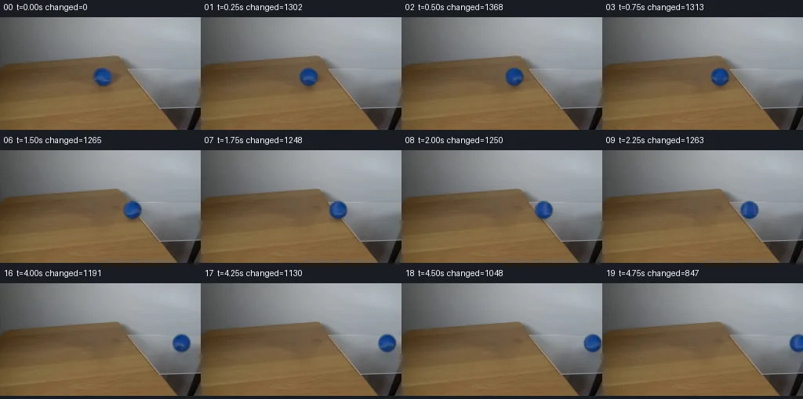

V0 · 初版 · 最终提交
![]()
Observable Generation Trace
把最终像素视频、Harness 冻结的每轮候选、真实工具事件和 Agent 自述放在同一页。可观测证据与模型自述分开标记，避免把“模型说它检查过”误当成真实工具调用。
![首帧]()
Static locked-off single-shot with fixed frame throughout filmed with constant framerate in real-time. The scene shows a realistic scientific demonstration. The scene only contains the described setup and actions. A piece of clear glass resting on the edge of a light-colored wooden table against a plain white wall. The blue tennis ball rolls from the wooden table over the glass.
首帧显示在左侧播放器初始画面。Track 权限、隔离和 tensor 一致性来自 run manifest，而不是 METHOD.md。
默认勾选初版和最终版；可选其他版本一起同步播放。仅检查图更新的连续重复快照已合并，回退旧视频仍保留为一次修订。
Observable events
来源：events.jsonl + run manifest
此 Track 禁止读取输出图片。逐轮预览由外部 Harness 自动冻结，只用于事后审计，生成 Agent 当时看不到这些页面。
Frozen candidates
每张图来自该 round 的真实 00 / 01 / 05 / 10 / 19 帧

pixels f0a36c942fe8c6d3 · code 6037aec53af05be1
--- previous/generate.py
+++ current/generate.py
@@ -0,0 +1,190 @@
+"""Source-pixel continuation with local harmonic fill and analytic sphere rotation.
+No image viewer, network, model, renderer, or external scene assets are used.
+"""
+from pathlib import Path
+import json
+import numpy as np
+from PIL import Image, ImageDraw
+from scipy.ndimage import map_coordinates, gaussian_filter
+from scipy.special import erfc
+from scipy.sparse import lil_matrix
+from scipy.sparse.linalg import spsolve
+from artifact_io import save
+
+ROOT = Path(__file__).resolve().parent
+W, H, N, FPS = 256, 144, 20, 4
+CX, CY, R = 131.0, 75.8, 11.7
+SPEED = 25.0
+YY, XX = np.mgrid[:H, :W].astype(float)
+source = np.asarray(Image.open(ROOT / 'first_frame.png').convert('RGB'))
+assert source.shape == (H, W, 3)
+original = source.astype(float)
+
+
+def shadow_shape(x, y, cx, cy):
+ # Broad cast shadow to the right; a short, soft shadow below the contact.
+ cast = .23 * np.exp(-.5 * (((x-cx-7.5)/9.0)**2 + ((y-cy-3.2)/3.2)**2))
+ contact = .23 * np.exp(-.5 * (((x-cx-.5)/6.0)**2 + ((y-cy-R-1.1)/3.1)**2))
+ return cast + contact
+
+
+# The fill includes the silhouette, its antialiasing, and its existing shadows.
+rho = np.hypot(XX-CX, YY-CY)
+fill_mask = (rho < 13.6) | (shadow_shape(XX, YY, CX, CY) > .018)
+fill_mask &= (XX > 114) & (XX < 159) & (YY > 61) & (YY < 98)
+locations = np.argwhere(fill_mask)
+ids = np.full((H, W), -1, dtype=int)
+ids[fill_mask] = np.arange(len(locations))
+mat = lil_matrix((len(locations), len(locations)), dtype=float)
+rhs = np.zeros((len(locations), 3), dtype=float)
+for i, (y, x) in enumerate(locations):
+ mat[i, i] = 4
+ for dy, dx in ((0,1),(0,-1),(1,0),(-1,0)):
+ ny, nx = y+dy, x+dx
+ if fill_mask[ny, nx]:
+ mat[i, ids[ny, nx]] = -1
+ else:
+ rhs[i] += original[ny, nx]
+base = original.copy()
+base[fill_mask] = spsolve(mat.tocsr(), rhs)
+# Tiny photographic texture comes only from nearby exposed wood.
+residual = original - gaussian_filter(original, (1.0, 1.0, 0))
+noise = np.roll(residual, 39, axis=1)
+inside_distance = gaussian_filter(fill_mask.astype(float), .9)
+base[fill_mask] += .55 * noise[fill_mask] * inside_distance[fill_mask, None]
+base = np.clip(base, 0, 255)
+
+
+def matte(distance):
+ # Recorded object has a soft roughly one-pixel optical edge.
+ return .5 * erfc((distance - 11.18) / 1.14)
+
+
+def illumination(nx, ny, nz):
+ return .55 + .45 * np.maximum(-.10*nx - .26*ny + .9602*nz, 0)
+
+
+# Recover RGB surface reflectance from the original ball. It is a disk-indexed
+# field extended continuously to the rear hemisphere by front/back duplication.
+nx0, ny0 = (XX-CX)/R, (YY-CY)/R
+nz0 = np.sqrt(np.maximum(0, 1-nx0**2-ny0**2))
+a0 = matte(rho)
+foreground = (original - (1-a0[...,None])*base) / np.maximum(a0[...,None], .05)
+reflectance = foreground / illumination(nx0, ny0, nz0)[...,None]
+reflectance = np.clip(reflectance, [0, 35, 85], [85, 130, 200])
+# Reliable body samples define the unobserved edge. Pale seam texture is kept
+# in the observed interior instead of synthesizing a new tennis seam.
+reliable = (rho < 9.5) & (original[:,:,0] < 30)
+body_albedo = np.median(reflectance[reliable], axis=0)
+confidence = np.clip((a0-.42)/.50, 0, 1)
+texture = reflectance*confidence[...,None] + body_albedo*(1-confidence[...,None])
+
+# Four times sampling in both axes handles subpixel translation and edge coverage.
+SS = 4
+sy, sx = np.mgrid[:H*SS, :W*SS].astype(float)
+sx = (sx+.5)/SS-.5
+sy = (sy+.5)/SS-.5
+
… diff truncated; 103 more lines …pixels f0a36c942fe8c6d3 · code 0f3fb3578008a991
--- previous/generate.py
+++ current/generate.py
@@ -2,7 +2,9 @@
No image viewer, network, model, renderer, or external scene assets are used.
"""
from pathlib import Path
+import base64
import json
+import re
import numpy as np
from PIL import Image, ImageDraw
from scipy.ndimage import map_coordinates, gaussian_filter
@@ -162,6 +164,20 @@
unpacked = np.stack([(packed[:,:,t]>>16)&255, (packed[:,:,t]>>8)&255, packed[:,:,t]&255], axis=-1).astype(np.uint8)
assert np.array_equal(png, unpacked)
assert np.array_equal(png, frames[t])
+# Reconstruct each delta packet from the shipped player and compare every pixel.
+html = (ROOT/'index.html').read_text()
+player_data = json.loads(re.search(r'const DATA=(.*?);\nfunction unpack', html, re.S).group(1))
+player_frame = np.frombuffer(base64.b64decode(player_data['first']), dtype='<u4').copy()
+assert np.array_equal(player_frame.reshape(H,W), packed[:,:,0])
+for t, encoded in enumerate(player_data['deltas'], 1):
+ packet = np.frombuffer(base64.b64decode(encoded), dtype='<u4')
+ i = 0
+ while i < len(packet):
+ start, count = map(int, packet[i:i+2])
+ i += 2
+ player_frame[start:start+count] = packet[i:i+count]
+ i += count
+ assert np.array_equal(player_frame.reshape(H,W), packed[:,:,t])
# Fixed pixels include all upper wall and distant wood outside the small fill.
assert np.array_equal(frames[:, :59], np.broadcast_to(source[:59], frames[:,:59].shape))
assert np.array_equal(frames[:, :, :110], np.broadcast_to(source[:,:110],frames[:,:,:110].shape))
@@ -177,7 +193,7 @@
report = {
'frames':N,'resolution':[W,H],'fps':FPS,'duration_seconds':N/FPS,
'tensor_shape':list(packed.shape),'tensor_dtype':str(packed.dtype),
- 'frame_00_exact':True,'all_png_tensor_matches':True,
+ 'frame_00_exact':True,'all_png_tensor_matches':True,'all_html_packet_matches':True,
'unchanged_upper_wall_and_left_wood':True,
'source_fill_pixels':int(fill_mask.sum()),
'recovered_body_albedo':body_albedo.tolist(),Final visual checks
Harness 保存的最终产物


Agent claims
以下文字由生成 Agent 撰写，不等同于工具证据
Only prompt.txt and local numeric RGB inspection of first_frame.png were used. No image Read/View tool was used and no visual review is claimed.
The ball is already rolling to the right at the first sample. Use 25 pixels/second horizontal center speed and a very small perspective slope (+0.004 y per x). At 4 fps that is 6.25 pixels per frame. Its radius stays effectively fixed. Rolling angle is traveled distance divided by 11.7 pixels, about 0.534 radians per frame. Contact remains continuous across the table/glass boundary, near x=180 at the ball's support depth. The glass supports the ball throughout the visible action. A faint, clipped reflection appears only when it reaches exposed glass; the original glass pixels remain otherwise fixed. No added hand, camera movement, glass breakage, or unrelated action.
Frame 00 is copied exactly from the input. Each frame occupies 0.25 seconds, giving a five-second, 20-frame clip; sample times are 0.00 through 4.75 seconds.
| Frame | Time (s) | Center x | Center y | Event |
|---|---|---|---|---|
| 00 | 0.00 | 131.00 | 75.80 | Exact source image; ball on wood |
| 01 | 0.25 | 137.25 | 75.83 | Roll right across the wood; seam rotates and shadow follows |
| 02 | 0.50 | 143.50 | 75.85 | Roll right across the wood; seam rotates and shadow follows |
| 03 | 0.75 | 149.75 | 75.88 | Roll right across the wood; seam rotates and shadow follows |
| 04 | 1.00 | 156.00 | 75.90 | Roll right across the wood; seam rotates and shadow follows |
| 05 | 1.25 | 162.25 | 75.92 | Roll right across the wood; seam rotates and shadow follows |
| 06 | 1.50 | 168.50 | 75.95 | Roll right across the wood; seam rotates and shadow follows |
| 07 | 1.75 | 174.75 | 75.97 | Ball approaches the supported table/glass junction |
| 08 | 2.00 | 181.00 | 76.00 | Center passes onto exposed glass with uninterrupted support |
| 09 | 2.25 | 187.25 | 76.02 | Roll over clear glass; faint reflection follows beneath ball |
| 10 | 2.50 | 193.50 | 76.05 | Roll over clear glass; faint reflection follows beneath ball |
| 11 | 2.75 | 199.75 | 76.08 | Roll over clear glass; faint reflection follows beneath ball |
| 12 | 3.00 | 206.00 | 76.10 | Roll over clear glass; faint reflection follows beneath ball |
| 13 | 3.25 | 212.25 | 76.12 | Roll over clear glass; faint reflection follows beneath ball |
| 14 | 3.50 | 218.50 | 76.15 | Roll over clear glass; faint reflection follows beneath ball |
| 15 | 3.75 | 224.75 | 76.17 | Roll over clear glass; faint reflection follows beneath ball |
| 16 | 4.00 | 231.00 | 76.20 | Roll over clear glass; faint reflection follows beneath ball |
| 17 | 4.25 | 237.25 | 76.22 | Roll over clear glass; faint reflection follows beneath ball |
| 18 | 4.50 | 243.50 | 76.25 | Continue toward right frame boundary, with natural partial cropping |
| 19 | 4.75 | 249.75 | 76.27 | Continue toward right frame boundary, with natural partial cropping |
Write generate.py, packed uint32 RGB tensor pixels.npz with shape (144,256,20), frames/00.png through 19.png, an eight-frame inspection.png contact sheet, transition_check.png showing early/consecutive frames and numeric differences, standalone index.html player, and METHOD.md. Check exact input equality for frame 00, dimensions and dtype, every PNG against tensor channel unpacking, fixed background outside the union of edited ball/shadow regions, and continuous ball trajectory numerically. Inspection sheets are deliverables, not a claim of visual review.
Generated a locked-camera continuation of the supplied photographic first frame: the blue tennis ball rolls right from the wood onto the clear glass. All stationary scene content comes from the input image. Frame 00 is the original RGB array without alteration.
OBSERVATION.md was written before the generation script, including the measured layout and all 20 planned samples. No image Read/View tool, image viewer, network, external model, rendering engine, or subagent was used.(131 + 6.25*t, 75.8 + 0.025*t) and its rotation angle is 6.25*t/11.7 radians. An inverse rotation about the vertical screen axis samples the source surface field; analytic normals keep illumination fixed to the scene. Four-times subpixel sampling in each direction and a soft optical matte preserve a photographic edge. No additional physical interaction or glass breakage is invented.This is an analytic pixel animation with locally reconstructed source pixels, approximate sphere texture, and simple optical compositing. The projected motion speed, hidden surface, and shadow/reflection strengths are chosen plausible values; they are not measured subsequent video frames or outputs from a physical renderer.
generate.py: reproducible generator and numerical verification. Run with python generate.py from this workspace; dependencies are NumPy, Pillow, and SciPy.pixels.npz: key pixels, shape (144, 256, 20), dtype uint32, values packed as 0xRRGGBB.frames/00.png through frames/19.png: twenty RGB PNGs at 256 x 144 pixels.inspection.png: eight-frame contact sheet.transition_check.png: consecutive early, junction, and ending frames with sample time and changed-pixel counts.index.html: standalone embedded-pixel player with play, replay, seek, and loop controls. Playback interval is 250 ms (4 fps).OBSERVATION.md: input measurements and event plan..tmp/validation.json: numerical verification report.Twenty frames displayed for 0.25 seconds each give a five-second clip. Their sample timestamps are 0.00 through 4.75 seconds.
Review was numerical only. The inspection images were created as deliverables and were not opened with an image tool. Browser playback was not visually reviewed; the player's encoded pixel reconstruction was verified directly in Python.